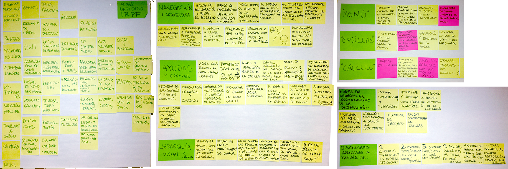

Tax Declaration App
Project Management and Interaction Design
Scope, Analysis, Research, Usability, Interaction and Visual design.
This project comprised the design of the tax paying application for one of Spain's autonomous provinces. This required a lot of research on the topic and countless hours understanding the tax payer's mental models in order to design an approach to the interaction and UI.
Step 1 - Client Documentation

Held an internal workshop to find and going deeper on all the topics related with tax paying in Spain, I'm oiginally from Venezuela and after 10 years here I still don't know many things.
Also considered and came to understand the client's ideas and information needs, as they were to develop the application with their own dev. team.
Step 2 - Structure and Navigation
Defined a navigation schematic to help the client (and our team) understand the relationships between the app's features, the information being managed and the user tasks.
Wrote this inventory as it was needed to expand on what each navigation module meant, its purpose, what it was supposed to be and offer to the tax payer.
Step 3 - Sketching
Spent a considerable time sketching the UI, this helped me understand even more the relations between the information and the tax payer's tasks.
Step 4 - Interaction Specs and Wireframing
Documented the methodology, navigation + architecture, help and error recovery system available to the user, included a more thorough App section inventory.
The interaction specs was rather large, here can be seen the kind of work made in documenting some of the sections:
One of the pages included each wireframe with visual indicatios to the notes about the interacion explanation on the following page.
Included a partial state on the tax declaration to explain how the interface would show the progress, its status, problems and future actions.
Explained the help and suggestions included in the UI, some micro interactions and a progressive disclosure of more information in case the user need more help.
Designed multiple dynamic ways for the tax payer's to complete their declaration, the steps to be followed and the interactions on each case.